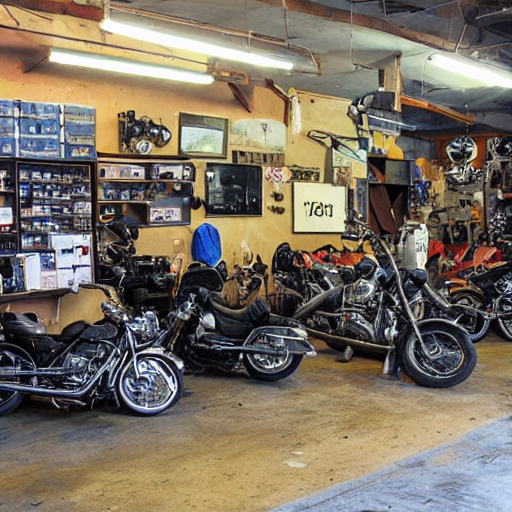

| Služba | Popis | CZK |
|---|---|---|
| Pravidelný Servis | Údržba a kontrola motorky podle výrobcem doporučených intervalů. | 1200 |
| Diagnostika a Opravy | Moderní diagnostické metody a profesionální opravy veškerých problémů. | Od 800 |
| Výměna Oleje a Filtrů | Profesionální výměna motorového oleje a filtrů pro optimální výkon. | 600 |
| Kontrola Brzdového Systému | Detailní kontrola brzdového systému a výměna brzdových destiček a kapalin. | 900 |
| Klimatizace a Chlazení | Údržba chlazení motoru a kontrola klimatizačního systému. | 750 |
| Elektrické Opravy | Opravy elektrických součástí a systémů motorky. | Od 500 |
Vaše motorka zaslouží ty nejlepší odborné ruce, a to právě naleznete v našem servisním centru. Naši školení technici mají bohaté zkušenosti s širokou škálou motorek a jsou připraveni poskytnout vašemu stroji nejlepší péči.
Rozumíme, že váš čas je cenný. Proto nabízíme expressní servis, který zajišťuje rychlou a efektivní údržbu. Bez ztráty kvality vám poskytujeme špičkový servis v co nejkratším možném čase.
Pravidelný servis je klíčem k dlouhé životnosti a bezproblémovému provozu vaší motorky. Naše servisní programy jsou navrženy tak, aby udržely váš stroj v optimálním stavu a minimalizovaly riziko neočekávaných problémů.